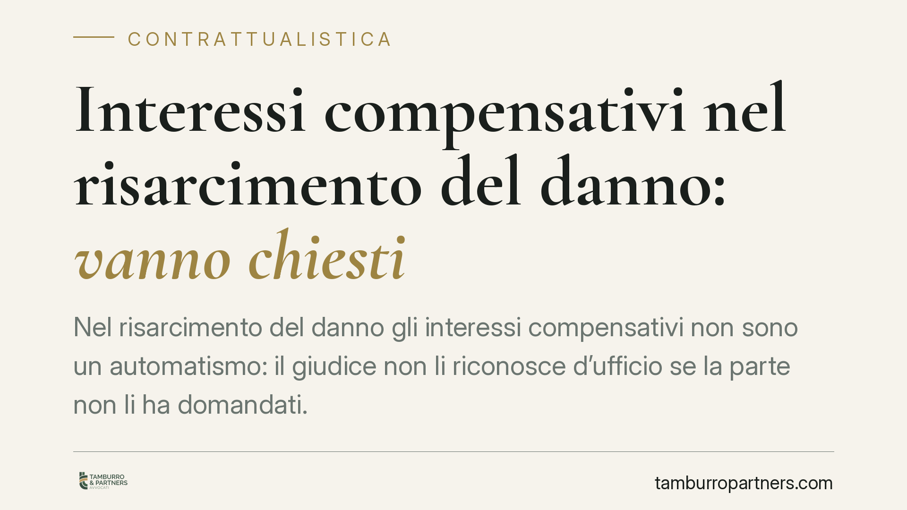

Interessi compensativi nel risarcimento del danno: vanno chiesti
Nel risarcimento del danno gli interessi compensativi non sono un automatismo: il giudice non li riconosce d'ufficio se la parte non li ha domandati. Un principio che incrocia la contrattualistica assicurativa, in particolare le clausole claims made delle polizze di responsabilità professionale. Vediamo cosa significa in concreto per enti, strutture e imprese assicurate.

Il tema in breve
Quando si agisce per ottenere il risarcimento di un danno, il credito che si vanta è un cosiddetto debito di valore: una somma che non è fissata una volta per tutte, ma deve essere rivalutata nel tempo per tenere conto della perdita di potere d'acquisto della moneta.
Su questo debito maturano gli interessi compensativi, che servono a ristorare il creditore del mancato godimento della somma dal momento in cui il danno si è prodotto fino alla liquidazione. Non vanno confusi con gli interessi moratori dell'art. 1224 del Codice civile, che sanzionano il ritardo nel pagamento di un'obbligazione pecuniaria già liquida ed esigibile (debito di valuta).
Inquadramento normativo
La distinzione ha radici consolidate. Le Sezioni Unite della Cassazione, con la sentenza n. 1712 del 1995, hanno chiarito che sul debito di valore gli interessi compensativi vanno calcolati non sulla somma già rivalutata, ma progressivamente sul capitale via via rivalutato. È il principio ancora oggi seguito.
Sul piano processuale, opera il principio di corrispondenza tra chiesto e pronunciato (art. 112 del Codice di procedura civile): il giudice deve pronunciarsi su tutta la domanda e non oltre i suoi limiti. Da qui deriva la cautela necessaria in materia di interessi.
La giurisprudenza distingue infatti due situazioni. Se la richiesta di interessi costituisce una vera e propria domanda accessoria autonoma, la sua proposizione per la prima volta in appello è preclusa come domanda nuova. Se invece si tratta della mera specificazione del quantum di una pretesa già ritualmente introdotta, la valutazione è meno rigida. La linea di confine non è sempre netta e va apprezzata caso per caso: è imprudente affermare in modo assoluto che ogni richiesta di interessi in appello sia inammissibile.
*(Nota redazionale: gli estremi di un'ordinanza recentemente segnalata sul punto sono in corso di verifica; ci atteniamo qui ai principi consolidati.)*
Il nodo assicurativo: la clausola claims made
Il tema si intreccia spesso con le polizze di responsabilità civile professionale, tipiche di ASL, strutture sanitarie e professionisti. Molte di queste polizze contengono la clausola claims made ("a richiesta fatta").
In parole semplici: mentre la copertura tradizionale (loss occurrence) opera in base al momento in cui si verifica il fatto dannoso, la clausola claims made àncora la copertura al momento in cui il danneggiato presenta la richiesta di risarcimento all'assicurato, purché entro il periodo di vigenza contrattuale.
Si tratta di una clausola contrattuale a tutti gli effetti, il cui equilibrio va vagliato alla luce dell'autonomia negoziale (art. 1322 del Codice civile) e, quando limita la responsabilità dell'assicuratore, della disciplina delle clausole vessatorie (art. 1341 del Codice civile), che richiede una specifica approvazione per iscritto. La sua interpretazione incide direttamente sul se e sul quanto l'assicuratore risponda, e dunque sul perimetro delle somme — capitale, rivalutazione e interessi — recuperabili in giudizio.
Implicazioni pratiche
Per un ente o una struttura convenuti in giudizio per danno, e per il loro assicuratore, il messaggio operativo è chiaro su due fronti.
Sul versante processuale: gli interessi compensativi vanno affrontati con precisione fin dal primo grado, tanto in domanda quanto in difesa, evitando formulazioni generiche che possano poi generare contenzioso sul perimetro del riconoscimento.
Sul versante assicurativo: occorre leggere la polizza per capire se e come opera la clausola claims made rispetto alla data della prima richiesta, perché da lì dipende la copertura delle voci accessorie liquidate in sentenza.
Cosa fare in concreto
- Formulate la domanda con precisione: indicate espressamente rivalutazione e interessi compensativi, con decorrenza e criterio di calcolo, già negli atti introduttivi del primo grado.
- Distinguete le voci: tenete separati capitale, rivalutazione, interessi compensativi e interessi moratori, per evitare contestazioni sul quantum.
- Verificate la polizza: individuate se la copertura è claims made o loss occurrence e la data della prima richiesta pervenuta all'assicurato.
- Controllate le clausole vessatorie: accertate la specifica approvazione per iscritto delle clausole limitative, ai sensi dell'art. 1341 del Codice civile.
- Coordinate difesa e manleva: allineate le posizioni tra assicurato e assicuratore fin dalla comparsa di costituzione, anche in vista della chiamata in garanzia.
Una gestione ordinata di questi passaggi riduce il rischio di vedersi riconosciute — o negate — voci accessorie per ragioni meramente processuali.
---
*Contributo informativo a cura di Tamburro & Partners Avvocati - Avv. Giuseppe Tamburro. Non costituisce parere legale.*
Ogni contratto ha il suo equilibrio.
Se vuoi una revisione delle clausole o una redazione su misura, scrivi allo studio. Ti rispondiamo entro un giorno lavorativo.